Kompletní přeložený průvodce pravidelnou údržbou tiskárny Anycubic Kobra X. Pohyblivé části, spotřební díly, nástroje a intervaly čištění.
Pravidelně mazejte trapézový šroub, optické osy, vodicí lišty, pojezdová kola a válečky extrudéru — předejdete korozi a mechanickému opotřebení. Na lišty a optické osy používejte olej, na trapézový šroub tuk (mazivo).
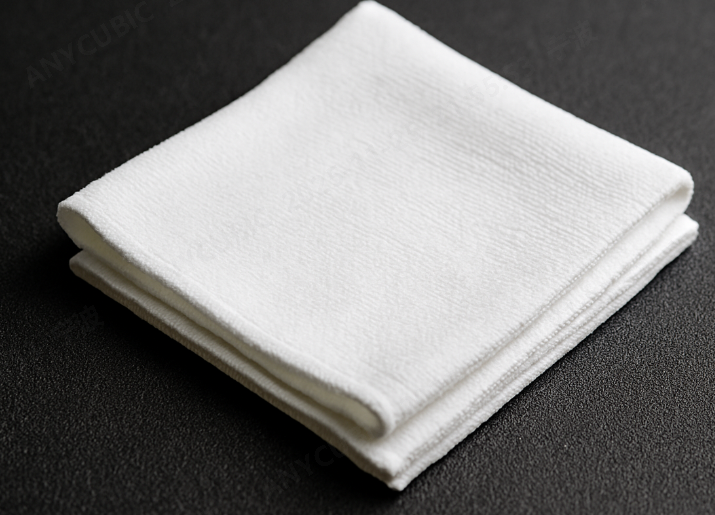
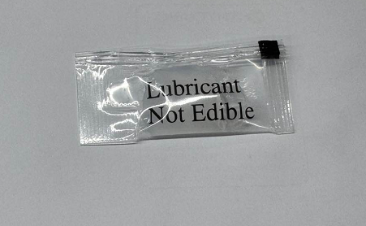
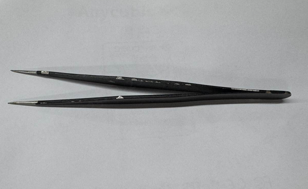
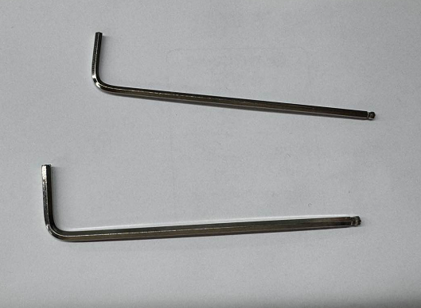
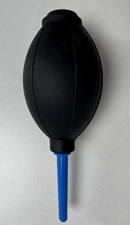
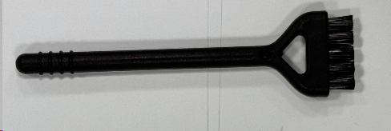
| Součást | Interval | Úkon | Nástroje |
|---|---|---|---|
| Osa X — vodicí lišta | Měsíčně | Kontrola čistoty, mazání olejem | Bezprašný hadřík, olej |
| Osa Y — vodicí lišta | Měsíčně / Čtvrtletně | Kontrola, krátkodobé mazání (2–3 měs.), dlouhodobé (6–12 měs.) | Hadřík, olej, imbusový klíč |
| Osa Z — trapézový šroub | Čtvrtletně | Namazání tukem po celé délce | Tuk (mazivo) |
| Purge wiper (čistič trysky) | Dle potřeby | Odstranění zbytků, mazání ozubení | Pinzeta, pumpička, tuk, imbusový klíč |
| Ventilátory | Dle potřeby | Vyčištění prachu | Pumpička / vatové tyčinky |
| Silikonová hubička (sleeve) | Při poškození | Výměna při poškození nebo uvolnění | Vizuální kontrola |
| Tryska a ohřívací blok | Dle potřeby | Čištění povrchu od usazenin plastu | Teplovzdorné rukavice, pinzeta, bezprašný hadřík |
| Nůžky (cutter) | Dle potřeby | Kontrola pružnosti, čistota | Vizuální kontrola |
| Silikonová tryska (purge) | Při poškození | Výměna při deformaci nebo poškození | Vizuální kontrola |
| PTFE trubice | Pravidelně | Kontrola opotřebení konců trubic | Vizuální kontrola |
| Tisková podložka (PEI) | Pravidelně | Čištění alkoholem nebo mýdlem | Bezprašný hadřík, alkohol, mycí prostředek |
| Kamera | Dle potřeby | Otření objektivu od prachu | Bezprašný hadřík / vatová tyčinka |
Doporučujeme kontrolovat vodicí lištu osy X měsíčně — ověřte, že je čistá a bez cizích těles. Pomáhá to udržovat správnou funkci lišty a zajišťuje stabilitu a přesnost tiskárny.
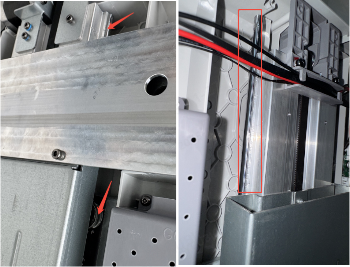
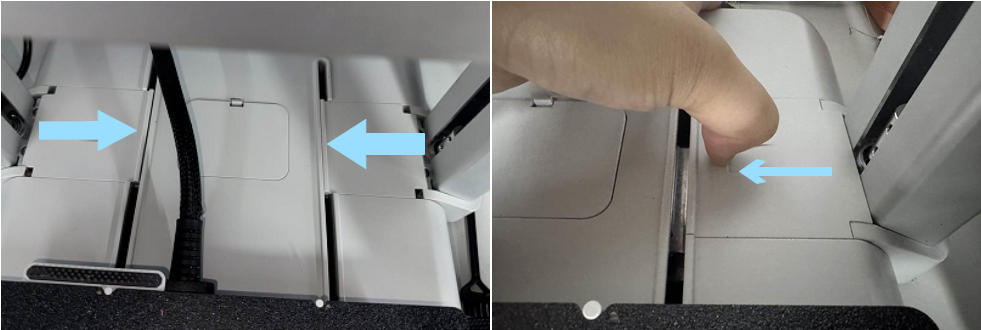
Doporučujeme kontrolovat vodicí lištu osy Y měsíčně — ověřte čistotu a nepřítomnost cizích těles. Pomáhá to zajistit stabilitu a přesnost pohybu.
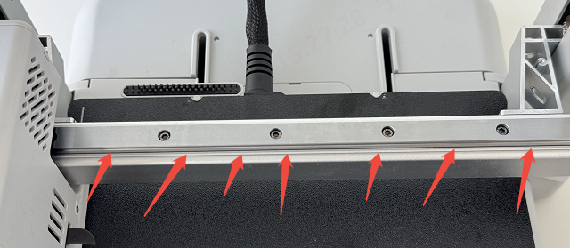
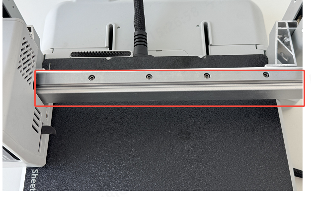
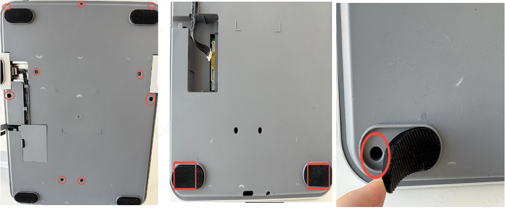
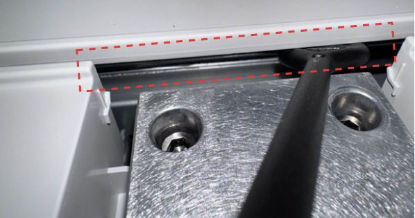
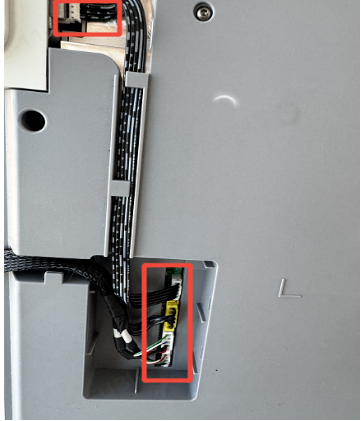
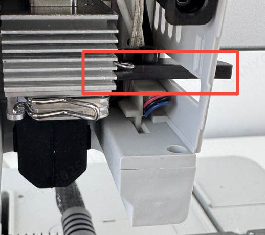
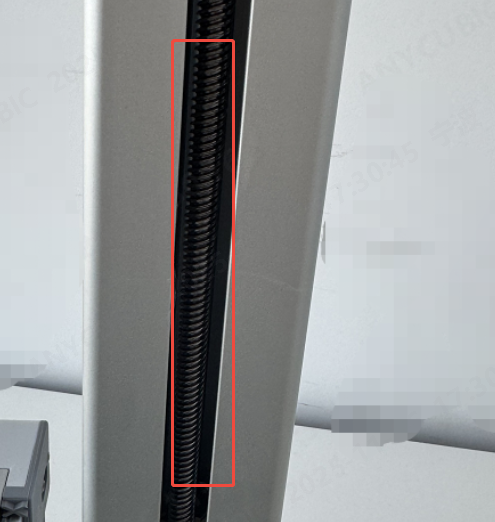
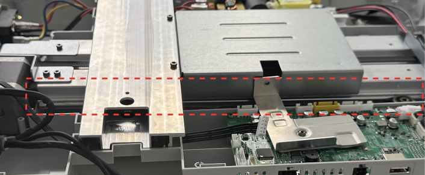
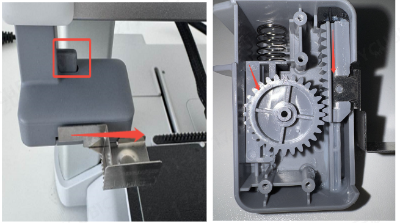
Pokud je pohyb purge wiperu blokován cizím tělesem nebo je mechanismus deformován a způsobuje zasekávání, může dojít k jamingu. V takovém případě:
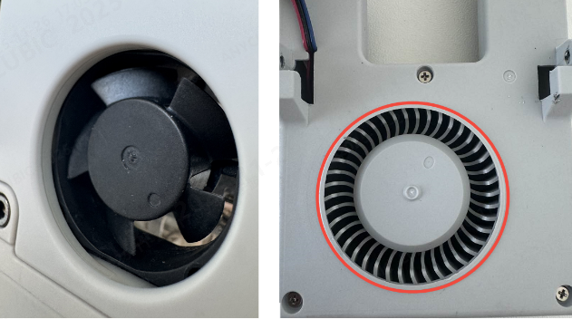
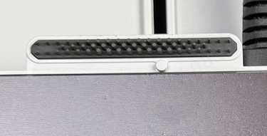
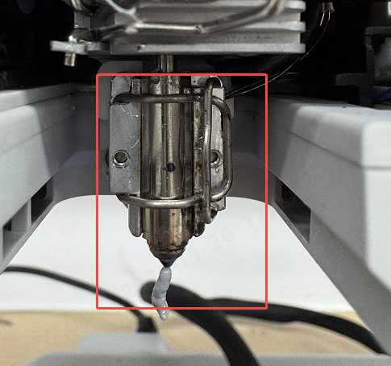
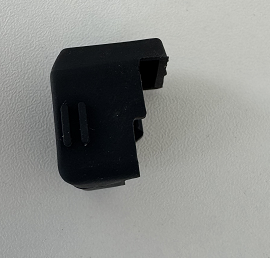
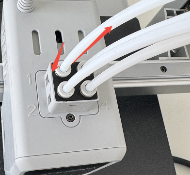
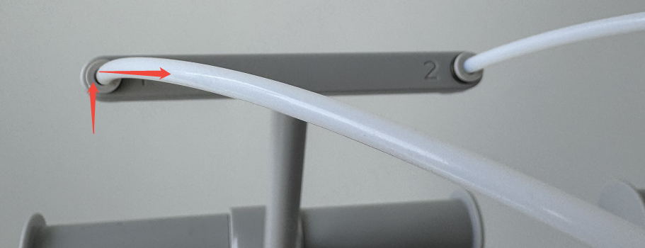
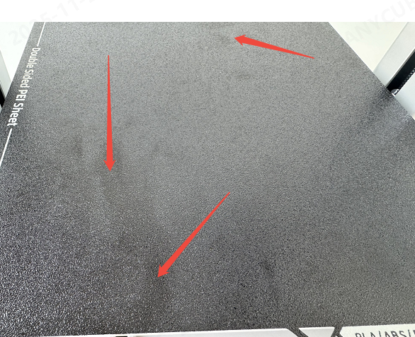
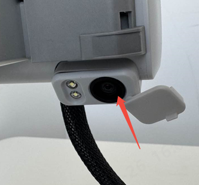